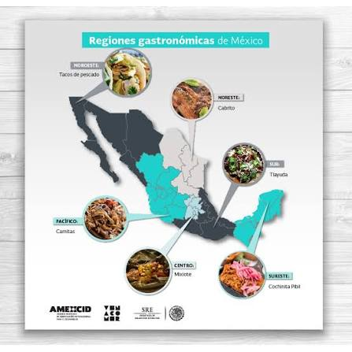
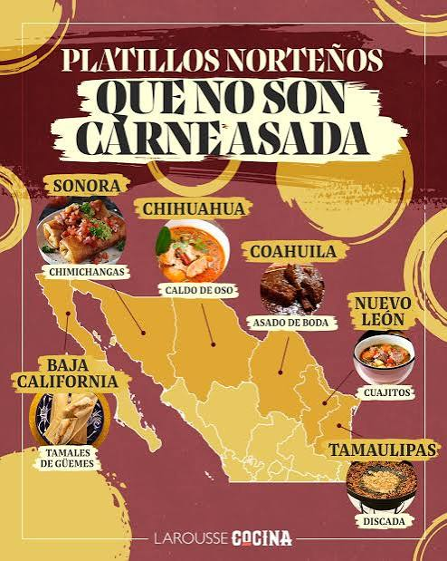

Norte: Carne asada, cabrito, machaca, tortillas de harina. Sonora, Nuevo Leon, Chihuahua.
Centro: Mole, chiles en nogada, barbacoa, tamales. Puebla, CDMX, Estado de Mexico.
Sur y Sureste: Cochinita pibil, mole negro, tlayudas, chocolate artesanal. Oaxaca, Yucatan, Chiapas.
Costa y Pacifico: Pescado zarandeado, ceviche, aguachile, camarones. Jalisco, Sinaloa, Veracruz.

